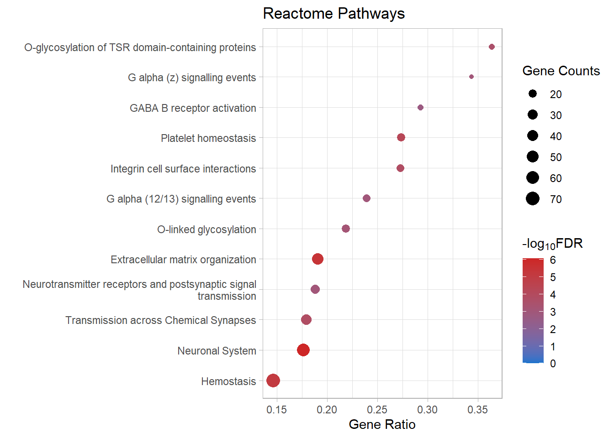
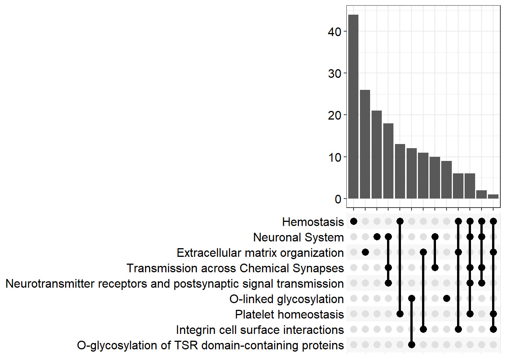

DE Analysis (Robertson Lab)
Ha Tran
22/08/2021
Last updated: 2023-01-20
Checks: 7 0
Knit directory: SRB_2022/1_analysis/
This reproducible R Markdown analysis was created with workflowr (version 1.7.0). The Checks tab describes the reproducibility checks that were applied when the results were created. The Past versions tab lists the development history.
Great! Since the R Markdown file has been committed to the Git repository, you know the exact version of the code that produced these results.
Great job! The global environment was empty. Objects defined in the global environment can affect the analysis in your R Markdown file in unknown ways. For reproduciblity it’s best to always run the code in an empty environment.
The command set.seed(12345) was run prior to running the
code in the R Markdown file. Setting a seed ensures that any results
that rely on randomness, e.g. subsampling or permutations, are
reproducible.
Great job! Recording the operating system, R version, and package versions is critical for reproducibility.
Nice! There were no cached chunks for this analysis, so you can be confident that you successfully produced the results during this run.
Great job! Using relative paths to the files within your workflowr project makes it easier to run your code on other machines.
Great! You are using Git for version control. Tracking code development and connecting the code version to the results is critical for reproducibility.
The results in this page were generated with repository version 7f6bab2. See the Past versions tab to see a history of the changes made to the R Markdown and HTML files.
Note that you need to be careful to ensure that all relevant files for
the analysis have been committed to Git prior to generating the results
(you can use wflow_publish or
wflow_git_commit). workflowr only checks the R Markdown
file, but you know if there are other scripts or data files that it
depends on. Below is the status of the Git repository when the results
were generated:
Ignored files:
Ignored: .Rhistory
Ignored: .Rproj.user/
Untracked files:
Untracked: .gitignore
Unstaged changes:
Modified: 0_data/RDS_objects/enrichGO_sig.rds
Modified: 0_data/RDS_objects/pub.rds
Deleted: 1_analysis/figure/kegg.Rmd/kegg_dot-1.png
Deleted: 1_analysis/figure/kegg.Rmd/unnamed-chunk-10-1.png
Deleted: 1_analysis/figure/kegg.Rmd/unnamed-chunk-11-1.png
Deleted: 1_analysis/figure/kegg.Rmd/unnamed-chunk-6-1.png
Deleted: 1_analysis/figure/kegg.Rmd/unnamed-chunk-7-1.png
Deleted: 1_analysis/figure/kegg.Rmd/upset-1.png
Modified: 2_plots/de/ma_1.05.png
Modified: 2_plots/de/ma_1.1.png
Modified: 2_plots/de/ma_1.5.png
Modified: 2_plots/de/pval_1.05.svg
Modified: 2_plots/de/vol_1.05.png
Modified: 2_plots/de/vol_1.1.png
Modified: 2_plots/de/vol_1.5.png
Modified: 2_plots/go/bp_dot_1.05.svg
Modified: 2_plots/go/bp_dot_1.1.svg
Modified: 2_plots/go/bp_dot_1.5.svg
Modified: 2_plots/go/cc_dot_1.05.svg
Modified: 2_plots/go/cc_dot_1.1.svg
Modified: 2_plots/go/cc_dot_1.5.svg
Modified: 2_plots/go/mf_dot_1.05.svg
Modified: 2_plots/go/mf_dot_1.1.svg
Modified: 2_plots/go/mf_dot_1.5.svg
Modified: 2_plots/ipa/Cardiovascular System.svg
Modified: 2_plots/ipa/Cell-To-Cell Signaling.svg
Modified: 2_plots/ipa/Cellular Movement.svg
Modified: 2_plots/ipa/pathways.svg
Modified: 2_plots/kegg/heat_1.05_Cytokine-cytokine receptor interaction.svg
Modified: 2_plots/kegg/heat_1.05_Focal adhesion.svg
Modified: 2_plots/kegg/heat_1.05_Hematopoietic cell lineage.svg
Modified: 2_plots/kegg/heat_1.05_Leukocyte transendothelial migration.svg
Modified: 2_plots/kegg/heat_1.05_PI3K-Akt signaling pathway.svg
Modified: 2_plots/kegg/heat_1.05_Vascular smooth muscle contraction.svg
Modified: 2_plots/kegg/heat_1.1_Cytokine-cytokine receptor interaction.svg
Modified: 2_plots/kegg/heat_1.1_Focal adhesion.svg
Modified: 2_plots/kegg/heat_1.1_Hematopoietic cell lineage.svg
Modified: 2_plots/kegg/heat_1.1_Leukocyte transendothelial migration.svg
Modified: 2_plots/kegg/heat_1.1_PI3K-Akt signaling pathway.svg
Modified: 2_plots/kegg/heat_1.1_Vascular smooth muscle contraction.svg
Modified: 2_plots/kegg/heat_1.5_Cytokine-cytokine receptor interaction.svg
Modified: 2_plots/kegg/heat_1.5_Focal adhesion.svg
Modified: 2_plots/kegg/heat_1.5_Hematopoietic cell lineage.svg
Modified: 2_plots/kegg/heat_1.5_Leukocyte transendothelial migration.svg
Modified: 2_plots/kegg/heat_1.5_PI3K-Akt signaling pathway.svg
Modified: 2_plots/kegg/heat_1.5_Vascular smooth muscle contraction.svg
Modified: 2_plots/kegg/kegg_dot_1.05.svg
Modified: 2_plots/kegg/kegg_dot_1.1.svg
Modified: 2_plots/kegg/kegg_dot_1.5.svg
Modified: 2_plots/kegg/upset_kegg_1.05.svg
Modified: 2_plots/kegg/upset_kegg_1.1.svg
Modified: 2_plots/kegg/upset_kegg_1.5.svg
Modified: 2_plots/qc/PCA_IntvsCont.svg
Modified: 2_plots/reactome/react_dot_1.05.svg
Modified: 2_plots/reactome/react_dot_1.1.svg
Modified: 2_plots/reactome/react_dot_1.5.svg
Modified: 2_plots/reactome/upset_react_1.05.svg
Modified: 2_plots/reactome/upset_react_1.1.svg
Modified: 2_plots/reactome/upset_react_1.5.svg
Modified: 3_output/enrichGO_sig.xlsx
Modified: 3_output/enrichKEGG_all.xlsx
Modified: 3_output/enrichKEGG_sig.xlsx
Modified: 3_output/lmTreat_all.xlsx
Modified: 3_output/lmTreat_fc1.5_voom2_all_fdr.xlsx
Modified: 3_output/lmTreat_sig.xlsx
Modified: 3_output/reactome_all.xlsx
Modified: 3_output/reactome_sig.xlsx
Note that any generated files, e.g. HTML, png, CSS, etc., are not included in this status report because it is ok for generated content to have uncommitted changes.
These are the previous versions of the repository in which changes were
made to the R Markdown (1_analysis/reactome.Rmd) and HTML
(docs/reactome.html) files. If you’ve configured a remote
Git repository (see ?wflow_git_remote), click on the
hyperlinks in the table below to view the files as they were in that
past version.
| File | Version | Author | Date | Message |
|---|---|---|---|---|
| Rmd | 7f6bab2 | Ha Manh Tran | 2023-01-20 | workflowr::wflow_publish(here::here("1_analysis/*.Rmd")) |
| Rmd | b6cf190 | tranmanhha135 | 2023-01-19 | quick commit |
| Rmd | 3119fad | tranmanhha135 | 2022-11-05 | build website |
| html | 3119fad | tranmanhha135 | 2022-11-05 | build website |
Data Setup
# working with data
library(dplyr)
library(magrittr)
library(readr)
library(tibble)
library(reshape2)
library(tidyverse)
# Visualisation:
library(kableExtra)
library(ggplot2)
library(grid)
library(pander)
library(cowplot)
library(pheatmap)
# Custom ggplot
library(ggbiplot)
library(ggrepel)
theme_set(theme_light())
pub <- readRDS(here::here("0_data/RDS_objects/pub.rds"))
# Bioconductor packages:
library(edgeR)
library(limma)
library(Glimma)
library(clusterProfiler)
library(org.Mm.eg.db)
library(enrichplot)
library(ReactomePA)Import DGElist Data
DGElist object containing the raw feature count, sample metadata, and gene metadata, created in the Set Up stage.
# load DGElist previously created in the set up
dge <- readRDS(here::here("0_data/RDS_objects/dge.rds"))
fc <- readRDS(here::here("0_data/RDS_objects/fc.rds"))
lfc <- readRDS(here::here("0_data/RDS_objects/lfc.rds"))
lmTreat <- readRDS(here::here("0_data/RDS_objects/lmTreat.rds"))
lmTreat_sig <- readRDS(here::here("0_data/RDS_objects/lmTreat_sig.rds"))Reactome
FC=1.05
p=1Enriched pathways
reactome=list()
reactome_all=list()
reactome_sig=list()
for (i in 1:length(fc)) {
x <- fc[i] %>% as.character()
reactome[[x]] <- enrichPathway(gene = lmTreat_sig[[x]]$entrezid, organism = "mouse", pvalueCutoff = 0.05, pAdjustMethod = "fdr", readable = T)
reactome_all[[x]] <- reactome[[x]]@result
reactome_sig[[x]] <- reactome_all[[x]] %>% dplyr::filter(p.adjust <= 0.05) %>%
separate(col = BgRatio, sep = "/", into = c("Total", "Universe")) %>%
dplyr::mutate(
logFDR = -log(p.adjust, 10),
GeneRatio = Count / as.numeric(Total))%>%
dplyr::select(c("Description", "GeneRatio", "pvalue", "p.adjust", "logFDR", "qvalue", "geneID", "Count"))
# at the beginnning of a word (after 35 characters), add a newline. shorten the y axis for dot plot
reactome_sig[[x]]$Description <- sub(pattern = "(.{1,35})(?:$| )",
replacement = "\\1\n",
x = reactome_sig[[x]]$Description)
# remove the additional newline at the end of the string
reactome_sig[[x]]$Description <- sub(pattern = "\n$",
replacement = "",
x = reactome_sig[[x]]$Description)
}
kable(x = reactome_sig[[p]]) %>%
kable_styling(bootstrap_options = c("striped", "hover")) %>%
scroll_box(height = "600px")| Description | GeneRatio | pvalue | p.adjust | logFDR | qvalue | geneID | Count | |
|---|---|---|---|---|---|---|---|---|
| R-MMU-112316 | Neuronal System | 0.1744548 | 0.0000000 | 0.0000023 | 5.646701 | 0.0000019 | Kcnk3/Kcnb2/Syn2/Slc1a3/Kcnj3/Gria4/Kcna6/Kcnd2/Ptprd/Kcnd3/Nlgn1/Epb41l3/Abat/Lrrc7/Gnai1/Lrrc4b/Kcnq5/Grin2b/Adcy3/Shank2/Maoa/Gngt2/Plcb1/Ppfia2/Slitrk3/Rps6ka2/Glrb/Ppfia4/Adcy4/Adcy7/Gabra4/Dlg2/Gng11/Lin7a/Nlgn3/Tspan7/Kcnma1/Gjc1/Gng2/Kcnc4/Plcb2/Slc38a1/Lrfn2/Dlg4/Kcng4/Gnb5/Arhgef9/Gnb4/Gabbr1/Kcnq4/Cacna1a/Cacnb4/Prkar1b/Kcnh1/Camk1/Nlgn2 | 56 |
| R-MMU-1474244 | Extracellular matrix organization | 0.1904762 | 0.0000000 | 0.0000040 | 5.400249 | 0.0000034 | Col11a1/Mmp16/Col26a1/Itga4/P3h3/Col14a1/Capn6/Ddr2/Col4a6/Cd44/Lama4/Col16a1/Itgb7/Fn1/Mmp2/Icam1/Nid1/Jam3/Itga1/Col13a1/Loxl3/Itgal/Emilin1/Pecam1/Col5a2/Ltbp3/Mmp19/Bgn/Col15a1/P3h1/Adam19/Efemp2/Crtap/Col23a1/Col18a1/Itga8/Itgb4/Tmprss6/Lum/Nid2/Bmp7/Jam2/Fbln5/Col4a5 | 44 |
| R-MMU-109582 | Hemostasis | 0.1451943 | 0.0000001 | 0.0000176 | 4.754163 | 0.0000150 | Apob/Hgf/Angpt1/Itga4/Cd109/Igf1/Tfpi/Slc8a1/Nos3/Cd44/Pcdh7/P2rx2/Gnai1/Fn1/Pde1b/Serpine2/Jam3/Tek/Gngt2/Pik3r6/Dock2/Rasgrp2/Slc8a3/Trpc6/Sh2b2/Kif26a/Dock10/Maged2/Islr/Procr/Gng11/Itgal/Esam/Dgkb/Tubb4a/Vegfc/Pde1a/Sele/Pecam1/Kif6/Igf2/Gng2/Pros1/Arrb1/Sccpdh/Arrb2/Fyn/Pde5a/Cd84/Tor4a/Fgr/Habp4/Atp2b4/Gnb5/Fam3c/Selenop/Gnb4/Apbb1ip/Sri/Lat/Vps45/Kif16b/Spn/Lcp2/Pafah2/Lhfpl2/F2r/Prkar1b/Kif5a/Plek/Jam2 | 71 |
| R-MMU-418346 | Platelet homeostasis | 0.2676056 | 0.0000010 | 0.0001715 | 3.765660 | 0.0001464 | Apob/Slc8a1/Nos3/P2rx2/Pde1b/Gngt2/Slc8a3/Trpc6/Gng11/Pde1a/Pecam1/Gng2/Pde5a/Fgr/Atp2b4/Gnb5/Gnb4/Sri/Pafah2 | 19 |
| R-MMU-216083 | Integrin cell surface interactions | 0.2727273 | 0.0000014 | 0.0001956 | 3.708584 | 0.0001670 | Itga4/Col4a6/Cd44/Col16a1/Itgb7/Fn1/Icam1/Jam3/Itga1/Col13a1/Itgal/Pecam1/Col5a2/Col18a1/Itga8/Lum/Jam2/Col4a5 | 18 |
| R-MMU-112315 | Transmission across Chemical Synapses | 0.1758794 | 0.0000026 | 0.0002986 | 3.524891 | 0.0002549 | Syn2/Slc1a3/Kcnj3/Gria4/Abat/Lrrc7/Gnai1/Grin2b/Adcy3/Maoa/Gngt2/Plcb1/Ppfia2/Rps6ka2/Glrb/Ppfia4/Adcy4/Adcy7/Gabra4/Dlg2/Gng11/Lin7a/Tspan7/Gng2/Plcb2/Slc38a1/Dlg4/Gnb5/Arhgef9/Gnb4/Gabbr1/Cacna1a/Cacnb4/Prkar1b/Camk1 | 35 |
| R-MMU-5173214 | O-glycosylation of TSR domain-containing proteins | 0.3636364 | 0.0000030 | 0.0002986 | 3.524891 | 0.0002549 | Adamts20/Sema5b/Adamts16/Adamts19/Thsd7b/Thsd1/Adamts1/Adamts10/Adamts7/Adamtsl1/Sbspon/Adamts17 | 12 |
| R-MMU-5173105 | O-linked glycosylation | 0.2187500 | 0.0000090 | 0.0007894 | 3.102709 | 0.0006737 | Adamts20/Sema5b/Adamts16/Adamts19/Thsd7b/Thsd1/Adamts1/Galnt16/St3gal2/St6galnac4/Adamts10/Adamts7/Galntl6/Adamtsl1/Pomt2/Large1/B3gnt5/St3gal4/Sbspon/Adamts17/Galnt18 | 21 |
| R-MMU-112314 | Neurotransmitter receptors and postsynaptic signal transmission | 0.1838235 | 0.0000325 | 0.0025359 | 2.595874 | 0.0021643 | Kcnj3/Gria4/Lrrc7/Gnai1/Grin2b/Adcy3/Gngt2/Plcb1/Rps6ka2/Glrb/Adcy4/Adcy7/Gabra4/Dlg2/Gng11/Tspan7/Gng2/Plcb2/Dlg4/Gnb5/Arhgef9/Gnb4/Gabbr1/Prkar1b/Camk1 | 25 |
| R-MMU-416482 | G alpha (12/13) signalling events | 0.2285714 | 0.0000592 | 0.0041624 | 2.380653 | 0.0035526 | Plxnb1/Adra1a/Arhgef25/Gngt2/Gng11/Arhgef15/Gng2/Arhgef26/Net1/Fgd1/Gnb5/Ngef/Arhgef9/Gnb4/Fgd2/Plekhg5 | 16 |
| R-MMU-418597 | G alpha (z) signalling events | 0.3225806 | 0.0000665 | 0.0042502 | 2.371590 | 0.0036275 | Rgs16/Adcy3/Gngt2/Adcy4/Adcy7/Gng11/Gng2/Gnaz/Gnb5/Gnb4 | 10 |
| R-MMU-6794362 | Protein-protein interactions at synapses | 0.2272727 | 0.0001074 | 0.0062930 | 2.201141 | 0.0053710 | Gria4/Ptprd/Nlgn1/Epb41l3/Lrrc4b/Grin2b/Shank2/Ppfia2/Slitrk3/Ppfia4/Dlg2/Nlgn3/Lrfn2/Dlg4/Nlgn2 | 15 |
| R-MMU-1650814 | Collagen biosynthesis and modifying enzymes | 0.2333333 | 0.0001343 | 0.0068857 | 2.162050 | 0.0058769 | Col11a1/Col26a1/P3h3/Col14a1/Col4a6/Col16a1/Col13a1/Col5a2/Col15a1/P3h1/Crtap/Col23a1/Col18a1/Col4a5 | 14 |
| R-MMU-977444 | GABA B receptor activation | 0.2750000 | 0.0001469 | 0.0068857 | 2.162050 | 0.0058769 | Kcnj3/Gnai1/Adcy3/Gngt2/Adcy4/Adcy7/Gng11/Gng2/Gnb5/Gnb4/Gabbr1 | 11 |
| R-MMU-991365 | Activation of GABAB receptors | 0.2750000 | 0.0001469 | 0.0068857 | 2.162050 | 0.0058769 | Kcnj3/Gnai1/Adcy3/Gngt2/Adcy4/Adcy7/Gng11/Gng2/Gnb5/Gnb4/Gabbr1 | 11 |
| R-MMU-76002 | Platelet activation, signaling and aggregation | 0.1440329 | 0.0002003 | 0.0087992 | 2.055556 | 0.0075100 | Hgf/Cd109/Igf1/Pcdh7/Gnai1/Fn1/Gngt2/Pik3r6/Rasgrp2/Trpc6/Maged2/Islr/Gng11/Dgkb/Vegfc/Pecam1/Igf2/Gng2/Pros1/Arrb1/Sccpdh/Arrb2/Fyn/Tor4a/Habp4/Gnb5/Fam3c/Selenop/Gnb4/Apbb1ip/Lat/Lcp2/Lhfpl2/F2r/Plek | 35 |
| R-MMU-977443 | GABA receptor activation | 0.2321429 | 0.0002447 | 0.0101197 | 1.994832 | 0.0086370 | Kcnj3/Gnai1/Adcy3/Gngt2/Adcy4/Adcy7/Gabra4/Gng11/Gng2/Gnb5/Arhgef9/Gnb4/Gabbr1 | 13 |
| R-MMU-397795 | G-protein beta:gamma signalling | 0.3000000 | 0.0002876 | 0.0111282 | 1.953575 | 0.0094978 | Gngt2/Pik3r6/Plcb1/Gng11/Gng2/Plcb2/Akt3/Gnb5/Gnb4 | 9 |
| R-MMU-1296071 | Potassium Channels | 0.1875000 | 0.0003137 | 0.0111282 | 1.953575 | 0.0094978 | Kcnk3/Kcnb2/Kcnj3/Kcna6/Kcnd2/Kcnd3/Kcnq5/Gngt2/Gng11/Kcnma1/Gng2/Kcnc4/Kcng4/Gnb5/Gnb4/Gabbr1/Kcnq4/Kcnh1 | 18 |
| R-MMU-202433 | Generation of second messenger molecules | 0.3684211 | 0.0003372 | 0.0111282 | 1.953575 | 0.0094978 | Itk/Cd3g/Zap70/Lat/Lcp2/Grap2/Cd4 | 7 |
| R-MMU-418217 | G beta:gamma signalling through PLC beta | 0.3684211 | 0.0003372 | 0.0111282 | 1.953575 | 0.0094978 | Gngt2/Plcb1/Gng11/Gng2/Plcb2/Gnb5/Gnb4 | 7 |
| R-MMU-1474290 | Collagen formation | 0.2054795 | 0.0003519 | 0.0111282 | 1.953575 | 0.0094978 | Col11a1/Col26a1/P3h3/Col14a1/Col4a6/Col16a1/Col13a1/Loxl3/Col5a2/Col15a1/P3h1/Crtap/Col23a1/Col18a1/Col4a5 | 15 |
| R-MMU-202733 | Cell surface interactions at the vascular wall | 0.1910112 | 0.0003641 | 0.0111282 | 1.953575 | 0.0094978 | Apob/Angpt1/Itga4/Cd44/Fn1/Jam3/Tek/Procr/Itgal/Esam/Sele/Pecam1/Pros1/Fyn/Cd84/Spn/Jam2 | 17 |
| R-MMU-3000157 | Laminin interactions | 0.5000000 | 0.0004767 | 0.0136328 | 1.865417 | 0.0116353 | Col4a6/Lama4/Nid1/Nid2/Col4a5 | 5 |
| R-MMU-500657 | Presynaptic function of Kainate receptors | 0.3500000 | 0.0004848 | 0.0136328 | 1.865417 | 0.0116353 | Gngt2/Plcb1/Gng11/Gng2/Plcb2/Gnb5/Gnb4 | 7 |
| R-MMU-111885 | Opioid Signalling | 0.2028986 | 0.0006283 | 0.0163874 | 1.785490 | 0.0139864 | Gnai1/Pde1b/Adcy3/Gngt2/Plcb1/Adcy4/Adcy7/Gng11/Pde1a/Gng2/Plcb2/Gnb5/Gnb4/Prkar1b | 14 |
| R-MMU-4085001 | Sialic acid metabolism | 0.2727273 | 0.0006294 | 0.0163874 | 1.785490 | 0.0139864 | St6gal2/St8sia2/St8sia4/Npl/St3gal2/St6galnac4/St8sia6/St6galnac6/St3gal4 | 9 |
| R-MMU-8948216 | Collagen chain trimerization | 0.2571429 | 0.0010032 | 0.0251865 | 1.598832 | 0.0214963 | Col11a1/Col26a1/Col14a1/Col16a1/Col13a1/Col5a2/Col15a1/Col23a1/Col18a1 | 9 |
| R-MMU-451326 | Activation of kainate receptors upon glutamate binding | 0.2758621 | 0.0011595 | 0.0281070 | 1.551185 | 0.0239889 | Gngt2/Plcb1/Gng11/Gng2/Plcb2/Dlg4/Gnb5/Gnb4 | 8 |
| R-MMU-4086398 | Ca2+ pathway | 0.2325581 | 0.0012401 | 0.0290608 | 1.536692 | 0.0248030 | Lef1/Wnt11/Gngt2/Plcb1/Gng11/Gng2/Plcb2/Fzd2/Gnb5/Gnb4 | 10 |
| R-MMU-9013149 | RAC1 GTPase cycle | 0.1481481 | 0.0013126 | 0.0290804 | 1.536399 | 0.0248197 | Nhs/Mcam/Fermt2/Wasf3/Arhgap45/Arhgef25/Arhgap25/Dock2/Dock10/Abi2/Sh3bp1/Arhgef15/Nckap1l/Arap3/Prex2/Arhgap10/Dlc1/Arhgap31/Ngef/Fgd5/Arhgap15/Cav1/Cyfip2/Pld2 | 24 |
| R-MMU-9012999 | RHO GTPase cycle | 0.1198980 | 0.0013237 | 0.0290804 | 1.536399 | 0.0248197 | Nhs/Mcam/Plxnb1/Ccdc88a/Pcdh7/Fermt2/Wasf3/Arhgap45/Arhgef25/Akap12/Arhgap25/Dock2/Slitrk3/Myo9a/Plxnd1/Dock10/Abi2/Sh3bp1/Arhgap6/Arhgef15/Nckap1l/Arap3/Prex2/Arhgap10/Dlc1/Arhgef26/Arhgap28/Net1/Pde5a/Fgd1/Dlg5/Arhgap31/Arfgap3/Zap70/Cep97/Ngef/Arhgef9/Fgd5/Arhgap15/Elmo2/Cav1/Cyfip2/Pld2/Wdr6/Fmnl3/Fgd2/Plekhg5 | 47 |
| R-MMU-1630316 | Glycosaminoglycan metabolism | 0.1623932 | 0.0013730 | 0.0292500 | 1.533874 | 0.0249644 | Gpc6/Chst2/Cd44/Cspg4/Gpc3/B4galt2/Has2/St3gal2/Chst1/Glb1l/Bgn/Dse/Xylt1/St3gal4/Arsb/Abcc5/Gpc2/Lum/Papss2 | 19 |
| R-MMU-9013148 | CDC42 GTPase cycle | 0.1807229 | 0.0014375 | 0.0297233 | 1.526903 | 0.0253684 | Arhgap45/Arhgef25/Dock10/Arhgef15/Arap3/Prex2/Arhgap10/Dlc1/Arhgef26/Fgd1/Arhgap31/Ngef/Arhgef9/Cav1/Fgd2 | 15 |
| R-MMU-392451 | G beta:gamma signalling through PI3Kgamma | 0.2916667 | 0.0016515 | 0.0331723 | 1.479225 | 0.0283120 | Gngt2/Pik3r6/Gng11/Gng2/Akt3/Gnb5/Gnb4 | 7 |
| R-MMU-456926 | Thrombin signalling through proteinase activated receptors (PARs) | 0.2580645 | 0.0018586 | 0.0362946 | 1.440157 | 0.0309769 | Gngt2/Gng11/Gng2/Arrb1/Arrb2/Gnb5/Gnb4/F2r | 8 |
Dot plot
react_dot=list()
upset=list()
for (i in 1:length(fc)) {
x <- fc[i] %>% as.character()
react_dot[[x]] <- ggplot(reactome_sig[[x]][1:12, ]) +
geom_point(aes(x = GeneRatio, y = reorder(Description, GeneRatio), colour = logFDR, size = Count)) +
scale_color_gradient(low = "dodgerblue3", high = "firebrick3", limits = c(0, NA)) +
scale_size(range = c(1.5,5)) +
# ggtitle("Reactome Pathways") +
ylab(label = "") +
xlab(label = "Gene Ratio") +
labs(color = expression("-log"[10] * "FDR"), size = "Gene Counts")
ggsave(filename = paste0("react_dot_", x, ".svg"), plot = react_dot[[x]] + pub, path = here::here("2_plots/reactome/"),
width = 170, height = 130, units = "mm")
upset[[x]] <- upsetplot(x = reactome[[x]], 9)
ggsave(filename = paste0("upset_react_", fc[i], ".svg"), plot = upset[[x]], path = here::here("2_plots/reactome/"))
}
react_dot[[p]]
Upset
upset[[p]]
FC=1.1
p=p+1Enriched pathways
kable(x = reactome_sig[[p]]) %>%
kable_styling(bootstrap_options = c("striped", "hover")) %>%
scroll_box(height = "600px")| Description | GeneRatio | pvalue | p.adjust | logFDR | qvalue | geneID | Count | |
|---|---|---|---|---|---|---|---|---|
| R-MMU-112316 | Neuronal System | 0.1619938 | 0.0000000 | 0.0000009 | 6.027692 | 0.0000008 | Kcnk3/Kcnb2/Syn2/Kcnj3/Slc1a3/Gria4/Kcna6/Kcnd2/Ptprd/Kcnd3/Nlgn1/Epb41l3/Lrrc7/Abat/Gnai1/Lrrc4b/Kcnq5/Grin2b/Adcy3/Maoa/Shank2/Gngt2/Ppfia2/Plcb1/Slitrk3/Rps6ka2/Glrb/Gabra4/Dlg2/Adcy4/Ppfia4/Gng11/Nlgn3/Lin7a/Adcy7/Tspan7/Kcnma1/Kcnc4/Gjc1/Gng2/Plcb2/Lrfn2/Kcng4/Slc38a1/Dlg4/Gnb5/Arhgef9/Gnb4/Kcnq4/Gabbr1/Cacna1a/Cacnb4 | 52 |
| R-MMU-1474244 | Extracellular matrix organization | 0.1645022 | 0.0000002 | 0.0000561 | 4.251364 | 0.0000474 | Col11a1/Mmp16/Col26a1/Itga4/P3h3/Col14a1/Capn6/Col4a6/Ddr2/Cd44/Lama4/Itgb7/Fn1/Mmp2/Col16a1/Icam1/Nid1/Jam3/Itga1/Col13a1/Loxl3/Itgal/Emilin1/Pecam1/Col5a2/Col15a1/Ltbp3/Mmp19/Bgn/P3h1/Adam19/Crtap/Efemp2/Col23a1/Col18a1/Itga8/Tmprss6/Itgb4 | 38 |
| R-MMU-5173214 | O-glycosylation of TSR domain-containing proteins | 0.3636364 | 0.0000007 | 0.0001520 | 3.818039 | 0.0001285 | Adamts20/Sema5b/Adamts16/Adamts19/Thsd7b/Thsd1/Adamts1/Adamts10/Adamts7/Adamtsl1/Sbspon/Adamts17 | 12 |
| R-MMU-112315 | Transmission across Chemical Synapses | 0.1658291 | 0.0000009 | 0.0001533 | 3.814372 | 0.0001296 | Syn2/Kcnj3/Slc1a3/Gria4/Lrrc7/Abat/Gnai1/Grin2b/Adcy3/Maoa/Gngt2/Ppfia2/Plcb1/Rps6ka2/Glrb/Gabra4/Dlg2/Adcy4/Ppfia4/Gng11/Lin7a/Adcy7/Tspan7/Gng2/Plcb2/Slc38a1/Dlg4/Gnb5/Arhgef9/Gnb4/Gabbr1/Cacna1a/Cacnb4 | 33 |
| R-MMU-109582 | Hemostasis | 0.1226994 | 0.0000024 | 0.0003200 | 3.494859 | 0.0002705 | Apob/Hgf/Angpt1/Itga4/Cd109/Igf1/Tfpi/Nos3/Slc8a1/Cd44/Pcdh7/P2rx2/Gnai1/Fn1/Serpine2/Tek/Pde1b/Jam3/Gngt2/Pik3r6/Slc8a3/Rasgrp2/Dock2/Sh2b2/Kif26a/Dock10/Trpc6/Procr/Gng11/Islr/Esam/Itgal/Dgkb/Vegfc/Tubb4a/Pde1a/Maged2/Sele/Kif6/Igf2/Pecam1/Pros1/Gng2/Arrb1/Sccpdh/Pde5a/Cd84/Arrb2/Fyn/Fgr/Atp2b4/Tor4a/Selenop/Gnb5/Lat/Fam3c/Habp4/Apbb1ip/Gnb4/Kif16b | 60 |
| R-MMU-418346 | Platelet homeostasis | 0.2394366 | 0.0000029 | 0.0003220 | 3.492147 | 0.0002722 | Apob/Nos3/Slc8a1/P2rx2/Pde1b/Gngt2/Slc8a3/Trpc6/Gng11/Pde1a/Pecam1/Gng2/Pde5a/Fgr/Atp2b4/Gnb5/Gnb4 | 17 |
| R-MMU-5173105 | O-linked glycosylation | 0.1979167 | 0.0000153 | 0.0014582 | 2.836168 | 0.0012326 | Adamts20/Sema5b/Adamts16/Adamts19/Thsd7b/Thsd1/Adamts1/Galnt16/St6galnac4/St3gal2/Adamts10/Adamts7/Galntl6/Adamtsl1/B3gnt5/Sbspon/St3gal4/Large1/Adamts17 | 19 |
| R-MMU-418597 | G alpha (z) signalling events | 0.3225806 | 0.0000202 | 0.0016123 | 2.792544 | 0.0013629 | Rgs16/Adcy3/Gngt2/Adcy4/Gng11/Adcy7/Gng2/Gnaz/Gnb5/Gnb4 | 10 |
| R-MMU-216083 | Integrin cell surface interactions | 0.2272727 | 0.0000218 | 0.0016123 | 2.792544 | 0.0013629 | Itga4/Col4a6/Cd44/Itgb7/Fn1/Col16a1/Icam1/Jam3/Itga1/Col13a1/Itgal/Pecam1/Col5a2/Col18a1/Itga8 | 15 |
| R-MMU-112314 | Neurotransmitter receptors and postsynaptic signal transmission | 0.1691176 | 0.0000302 | 0.0020055 | 2.697778 | 0.0016952 | Kcnj3/Gria4/Lrrc7/Gnai1/Grin2b/Adcy3/Gngt2/Plcb1/Rps6ka2/Glrb/Gabra4/Dlg2/Adcy4/Gng11/Adcy7/Tspan7/Gng2/Plcb2/Dlg4/Gnb5/Arhgef9/Gnb4/Gabbr1 | 23 |
| R-MMU-977444 | GABA B receptor activation | 0.2750000 | 0.0000420 | 0.0023266 | 2.633279 | 0.0019666 | Kcnj3/Gnai1/Adcy3/Gngt2/Adcy4/Gng11/Adcy7/Gng2/Gnb5/Gnb4/Gabbr1 | 11 |
| R-MMU-991365 | Activation of GABAB receptors | 0.2750000 | 0.0000420 | 0.0023266 | 2.633279 | 0.0019666 | Kcnj3/Gnai1/Adcy3/Gngt2/Adcy4/Gng11/Adcy7/Gng2/Gnb5/Gnb4/Gabbr1 | 11 |
| R-MMU-977443 | GABA receptor activation | 0.2321429 | 0.0000606 | 0.0031021 | 2.508347 | 0.0026221 | Kcnj3/Gnai1/Adcy3/Gngt2/Gabra4/Adcy4/Gng11/Adcy7/Gng2/Gnb5/Arhgef9/Gnb4/Gabbr1 | 13 |
| R-MMU-6794362 | Protein-protein interactions at synapses | 0.2121212 | 0.0000917 | 0.0043570 | 2.360809 | 0.0036829 | Gria4/Ptprd/Nlgn1/Epb41l3/Lrrc4b/Grin2b/Shank2/Ppfia2/Slitrk3/Dlg2/Ppfia4/Nlgn3/Lrfn2/Dlg4 | 14 |
| R-MMU-397795 | G-protein beta:gamma signalling | 0.3000000 | 0.0001003 | 0.0044487 | 2.351765 | 0.0037604 | Gngt2/Pik3r6/Plcb1/Gng11/Gng2/Plcb2/Akt3/Gnb5/Gnb4 | 9 |
| R-MMU-1650814 | Collagen biosynthesis and modifying enzymes | 0.2166667 | 0.0001295 | 0.0053807 | 2.269160 | 0.0045482 | Col11a1/Col26a1/P3h3/Col14a1/Col4a6/Col16a1/Col13a1/Col5a2/Col15a1/P3h1/Crtap/Col23a1/Col18a1 | 13 |
| R-MMU-418217 | G beta:gamma signalling through PLC beta | 0.3684211 | 0.0001426 | 0.0055776 | 2.253554 | 0.0047146 | Gngt2/Plcb1/Gng11/Gng2/Plcb2/Gnb5/Gnb4 | 7 |
| R-MMU-416482 | G alpha (12/13) signalling events | 0.2000000 | 0.0001787 | 0.0063804 | 2.195151 | 0.0053932 | Plxnb1/Adra1a/Arhgef25/Gngt2/Gng11/Arhgef15/Gng2/Arhgef26/Net1/Fgd1/Gnb5/Ngef/Arhgef9/Gnb4 | 14 |
| R-MMU-1296071 | Potassium Channels | 0.1770833 | 0.0001823 | 0.0063804 | 2.195151 | 0.0053932 | Kcnk3/Kcnb2/Kcnj3/Kcna6/Kcnd2/Kcnd3/Kcnq5/Gngt2/Gng11/Kcnma1/Kcnc4/Gng2/Kcng4/Gnb5/Gnb4/Kcnq4/Gabbr1 | 17 |
| R-MMU-500657 | Presynaptic function of Kainate receptors | 0.3500000 | 0.0002068 | 0.0068768 | 2.162615 | 0.0058127 | Gngt2/Plcb1/Gng11/Gng2/Plcb2/Gnb5/Gnb4 | 7 |
| R-MMU-4085001 | Sialic acid metabolism | 0.2727273 | 0.0002258 | 0.0071491 | 2.145752 | 0.0060429 | St6gal2/St8sia2/St8sia4/Npl/St6galnac4/St3gal2/St8sia6/St6galnac6/St3gal4 | 9 |
| R-MMU-1474290 | Collagen formation | 0.1917808 | 0.0002839 | 0.0085803 | 2.066500 | 0.0072526 | Col11a1/Col26a1/P3h3/Col14a1/Col4a6/Col16a1/Col13a1/Loxl3/Col5a2/Col15a1/P3h1/Crtap/Col23a1/Col18a1 | 14 |
| R-MMU-76002 | Platelet activation, signaling and aggregation | 0.1275720 | 0.0003594 | 0.0101540 | 1.993364 | 0.0085829 | Hgf/Cd109/Igf1/Pcdh7/Gnai1/Fn1/Gngt2/Pik3r6/Rasgrp2/Trpc6/Gng11/Islr/Dgkb/Vegfc/Maged2/Igf2/Pecam1/Pros1/Gng2/Arrb1/Sccpdh/Arrb2/Fyn/Tor4a/Selenop/Gnb5/Lat/Fam3c/Habp4/Apbb1ip/Gnb4 | 31 |
| R-MMU-8948216 | Collagen chain trimerization | 0.2571429 | 0.0003665 | 0.0101540 | 1.993364 | 0.0085829 | Col11a1/Col26a1/Col14a1/Col16a1/Col13a1/Col5a2/Col15a1/Col23a1/Col18a1 | 9 |
| R-MMU-4086398 | Ca2+ pathway | 0.2325581 | 0.0004216 | 0.0112147 | 1.950213 | 0.0094794 | Lef1/Wnt11/Gngt2/Plcb1/Gng11/Gng2/Plcb2/Fzd2/Gnb5/Gnb4 | 10 |
| R-MMU-9013149 | RAC1 GTPase cycle | 0.1419753 | 0.0004551 | 0.0114220 | 1.942257 | 0.0096547 | Nhs/Mcam/Fermt2/Wasf3/Arhgap45/Arhgef25/Arhgap25/Dock2/Dock10/Abi2/Sh3bp1/Arhgef15/Nckap1l/Arap3/Prex2/Arhgap10/Dlc1/Arhgap31/Ngef/Fgd5/Arhgap15/Cav1/Cyfip2 | 23 |
| R-MMU-451326 | Activation of kainate receptors upon glutamate binding | 0.2758621 | 0.0004638 | 0.0114220 | 1.942257 | 0.0096547 | Gngt2/Plcb1/Gng11/Gng2/Plcb2/Dlg4/Gnb5/Gnb4 | 8 |
| R-MMU-111885 | Opioid Signalling | 0.1884058 | 0.0005559 | 0.0132027 | 1.879337 | 0.0111599 | Gnai1/Pde1b/Adcy3/Gngt2/Plcb1/Adcy4/Gng11/Adcy7/Pde1a/Gng2/Plcb2/Gnb5/Gnb4 | 13 |
| R-MMU-392451 | G beta:gamma signalling through PI3Kgamma | 0.2916667 | 0.0007301 | 0.0164497 | 1.783841 | 0.0139045 | Gngt2/Pik3r6/Gng11/Gng2/Akt3/Gnb5/Gnb4 | 7 |
| R-MMU-202733 | Cell surface interactions at the vascular wall | 0.1685393 | 0.0007421 | 0.0164497 | 1.783841 | 0.0139045 | Apob/Angpt1/Itga4/Cd44/Fn1/Tek/Jam3/Procr/Esam/Itgal/Sele/Pecam1/Pros1/Cd84/Fyn | 15 |
| R-MMU-446728 | Cell junction organization | 0.1875000 | 0.0009405 | 0.0201758 | 1.695169 | 0.0170540 | Sdk2/Fermt2/Cdh2/Cdh6/Cdh13/Cdh10/Cdh5/Cdh11/Pard6g/Parvb/Flnc/Itgb4 | 12 |
| R-MMU-9013148 | CDC42 GTPase cycle | 0.1686747 | 0.0010945 | 0.0227450 | 1.643114 | 0.0192257 | Arhgap45/Arhgef25/Dock10/Arhgef15/Arap3/Prex2/Arhgef26/Arhgap10/Dlc1/Fgd1/Arhgap31/Ngef/Arhgef9/Cav1 | 14 |
| R-MMU-397014 | Muscle contraction | 0.1372549 | 0.0012365 | 0.0249183 | 1.603481 | 0.0210627 | Kcnk3/Cacna1c/Kcnd2/Ryr1/Kcnd3/Slc8a1/Tmod2/Gucy1a2/Slc8a3/Itga1/Gucy1b1/Mme/Gucy1a1/Myl3/Cacng7/Kcnip3/Asph/Ryr3/Pde5a/Atp2b4/Atp1a2 | 21 |
| R-MMU-1296041 | Activation of G protein gated Potassium channels | 0.2592593 | 0.0015718 | 0.0290350 | 1.537078 | 0.0245425 | Kcnj3/Gngt2/Gng11/Gng2/Gnb5/Gnb4/Gabbr1 | 7 |
| R-MMU-1296059 | G protein gated Potassium channels | 0.2592593 | 0.0015718 | 0.0290350 | 1.537078 | 0.0245425 | Kcnj3/Gngt2/Gng11/Gng2/Gnb5/Gnb4/Gabbr1 | 7 |
| R-MMU-997272 | Inhibition of voltage gated Ca2+ channels via Gbeta/gamma subunits | 0.2592593 | 0.0015718 | 0.0290350 | 1.537078 | 0.0245425 | Kcnj3/Gngt2/Gng11/Gng2/Gnb5/Gnb4/Gabbr1 | 7 |
| R-MMU-1630316 | Glycosaminoglycan metabolism | 0.1452991 | 0.0018891 | 0.0339521 | 1.469134 | 0.0286987 | Gpc6/Chst2/Cd44/Cspg4/Gpc3/B4galt2/Has2/St3gal2/Chst1/Glb1l/Bgn/Xylt1/Dse/St3gal4/Arsb/Gpc2/Abcc5 | 17 |
| R-MMU-392170 | ADP signalling through P2Y purinoceptor 12 | 0.2857143 | 0.0019821 | 0.0346868 | 1.459836 | 0.0293197 | Gnai1/Gngt2/Gng11/Gng2/Gnb5/Gnb4 | 6 |
| R-MMU-400042 | Adrenaline,noradrenaline inhibits insulin secretion | 0.2727273 | 0.0025737 | 0.0437866 | 1.358659 | 0.0370115 | Gnai1/Gngt2/Gng11/Gng2/Gnb5/Gnb4 | 6 |
| R-MMU-9012999 | RHO GTPase cycle | 0.1045918 | 0.0026338 | 0.0437866 | 1.358659 | 0.0370115 | Nhs/Mcam/Plxnb1/Ccdc88a/Pcdh7/Fermt2/Wasf3/Arhgap45/Arhgef25/Akap12/Arhgap25/Dock2/Slitrk3/Plxnd1/Dock10/Abi2/Myo9a/Sh3bp1/Arhgef15/Arhgap6/Nckap1l/Arap3/Prex2/Arhgef26/Arhgap10/Arhgap28/Pde5a/Dlc1/Net1/Fgd1/Zap70/Dlg5/Arhgap31/Ngef/Fgd5/Arhgef9/Cep97/Arhgap15/Arfgap3/Cav1/Cyfip2 | 41 |
| R-MMU-416476 | G alpha (q) signalling events | 0.1218274 | 0.0030033 | 0.0485967 | 1.313393 | 0.0410774 | Adra1a/Rgs16/Ednrb/Lpar4/Arhgef25/Gngt2/Ptgfr/Edn3/Plcb1/Rps6ka2/Trpc6/Gng11/Dgkb/Rgs5/Agtr1a/Ednra/Bdkrb2/Xcl1/Htr2a/Gng2/Plcb2/Gnb5/Prokr1/Gnb4 | 24 |
| R-MMU-373080 | Class B/2 (Secretin family receptors) | 0.1818182 | 0.0031179 | 0.0485967 | 1.313393 | 0.0410774 | Vipr2/Gngt2/Calca/Pth1r/Gng11/Adcyap1r1/Gng2/Calcrl/Gnb5/Gnb4 | 10 |
| R-MMU-1500931 | Cell-Cell communication | 0.1566265 | 0.0032224 | 0.0485967 | 1.313393 | 0.0410774 | Sdk2/Fermt2/Cdh2/Cdh6/Cdh13/Cdh10/Cdh5/Cdh11/Pard6g/Parvb/Flnc/Fyn/Itgb4 | 13 |
| R-MMU-1971475 | A tetrasaccharide linker sequence is required for GAG synthesis | 0.2608696 | 0.0032885 | 0.0485967 | 1.313393 | 0.0410774 | Gpc6/Cspg4/Gpc3/Bgn/Xylt1/Gpc2 | 6 |
| R-MMU-975576 | N-glycan antennae elongation in the medial/trans-Golgi | 0.2608696 | 0.0032885 | 0.0485967 | 1.313393 | 0.0410774 | St8sia2/Man2a2/Chst10/B4galt2/St8sia6/St3gal4 | 6 |
Dot plot
react_dot[[p]]
Upset
upset[[p]]
FC=1.5
p=p+1Enriched pathways
kable(x = reactome_sig[[p]]) %>%
kable_styling(bootstrap_options = c("striped", "hover")) %>%
scroll_box(height = "600px")| Description | GeneRatio | pvalue | p.adjust | logFDR | qvalue | geneID | Count | |
|---|---|---|---|---|---|---|---|---|
| R-MMU-112316 | Neuronal System | 0.0623053 | 0.0000008 | 0.0002601 | 3.584822 | 0.0002228 | Kcnk3/Kcnb2/Syn2/Kcnj3/Slc1a3/Kcnd2/Gria4/Kcna6/Kcnd3/Lrrc7/Nlgn1/Ptprd/Abat/Epb41l3/Lrrc4b/Gnai1/Kcnq5/Ppfia2/Grin2b/Gabra4 | 20 |
| R-MMU-6794362 | Protein-protein interactions at synapses | 0.1060606 | 0.0001513 | 0.0243552 | 1.613409 | 0.0208599 | Gria4/Nlgn1/Ptprd/Epb41l3/Lrrc4b/Ppfia2/Grin2b | 7 |
| R-MMU-5173214 | O-glycosylation of TSR domain-containing proteins | 0.1515152 | 0.0002554 | 0.0258090 | 1.588229 | 0.0221051 | Adamts20/Sema5b/Adamts16/Thsd7b/Adamts19 | 5 |
| R-MMU-422475 | Axon guidance | 0.0522088 | 0.0004433 | 0.0258090 | 1.588229 | 0.0221051 | Gap43/Epha8/Efnb3/Dcc/St8sia2/Plxnb1/St8sia4/Dab1/Evl/Grin2b/Sema7a/Mmp2/Cxcl12 | 13 |
| R-MMU-9675108 | Nervous system development | 0.0520000 | 0.0004606 | 0.0258090 | 1.588229 | 0.0221051 | Gap43/Epha8/Efnb3/Dcc/St8sia2/Plxnb1/St8sia4/Dab1/Evl/Grin2b/Sema7a/Mmp2/Cxcl12 | 13 |
| R-MMU-1474228 | Degradation of the extracellular matrix | 0.0747664 | 0.0005833 | 0.0258090 | 1.588229 | 0.0221051 | Col11a1/Mmp16/Col26a1/Capn6/Col4a6/Cd44/Mmp2/Nid1 | 8 |
| R-MMU-3000157 | Laminin interactions | 0.3000000 | 0.0005908 | 0.0258090 | 1.588229 | 0.0221051 | Col4a6/Lama4/Nid1 | 3 |
| R-MMU-1296072 | Voltage gated Potassium channels | 0.1250000 | 0.0006412 | 0.0258090 | 1.588229 | 0.0221051 | Kcnb2/Kcnd2/Kcna6/Kcnd3/Kcnq5 | 5 |
| R-MMU-1474244 | Extracellular matrix organization | 0.0519481 | 0.0007709 | 0.0259472 | 1.585909 | 0.0222235 | Col11a1/Mmp16/Col26a1/Col14a1/Capn6/Col4a6/Itga4/P3h3/Cd44/Mmp2/Lama4/Nid1 | 12 |
| R-MMU-975634 | Retinoid metabolism and transport | 0.1190476 | 0.0008058 | 0.0259472 | 1.585909 | 0.0222235 | Gpc6/Apob/Ttr/Gpc3/Lrp2 | 5 |
| R-MMU-6806667 | Metabolism of fat-soluble vitamins | 0.1086957 | 0.0012271 | 0.0359194 | 1.444671 | 0.0307646 | Gpc6/Apob/Ttr/Gpc3/Lrp2 | 5 |
| R-MMU-1296071 | Potassium Channels | 0.0729167 | 0.0014909 | 0.0400069 | 1.397865 | 0.0342655 | Kcnk3/Kcnb2/Kcnj3/Kcnd2/Kcna6/Kcnd3/Kcnq5 | 7 |
Dot plot
react_dot[[p]]Upset
upset[[p]]
Export Data
# save to csv
writexl::write_xlsx(x = reactome_all, here::here("3_output/reactome_all.xlsx"))
writexl::write_xlsx(x = reactome_sig, here::here("3_output/reactome_sig.xlsx"))
sessionInfo()R version 4.2.1 (2022-06-23 ucrt)
Platform: x86_64-w64-mingw32/x64 (64-bit)
Running under: Windows 10 x64 (build 19045)
Matrix products: default
locale:
[1] LC_COLLATE=English_Australia.utf8 LC_CTYPE=English_Australia.utf8
[3] LC_MONETARY=English_Australia.utf8 LC_NUMERIC=C
[5] LC_TIME=English_Australia.utf8
attached base packages:
[1] stats4 grid stats graphics grDevices utils datasets
[8] methods base
other attached packages:
[1] ReactomePA_1.40.0 enrichplot_1.16.2 org.Mm.eg.db_3.15.0
[4] AnnotationDbi_1.58.0 IRanges_2.30.1 S4Vectors_0.34.0
[7] Biobase_2.56.0 BiocGenerics_0.42.0 clusterProfiler_4.4.4
[10] Glimma_2.6.0 edgeR_3.38.4 limma_3.52.4
[13] ggrepel_0.9.1 ggbiplot_0.55 scales_1.2.1
[16] plyr_1.8.7 pheatmap_1.0.12 cowplot_1.1.1
[19] pander_0.6.5 kableExtra_1.3.4 forcats_0.5.2
[22] stringr_1.4.1 purrr_0.3.5 tidyr_1.2.1
[25] ggplot2_3.3.6 tidyverse_1.3.2 reshape2_1.4.4
[28] tibble_3.1.8 readr_2.1.3 magrittr_2.0.3
[31] dplyr_1.0.10
loaded via a namespace (and not attached):
[1] utf8_1.2.2 tidyselect_1.2.0
[3] RSQLite_2.2.18 htmlwidgets_1.5.4
[5] BiocParallel_1.30.3 scatterpie_0.1.8
[7] munsell_0.5.0 ragg_1.2.3
[9] codetools_0.2-18 withr_2.5.0
[11] colorspace_2.0-3 GOSemSim_2.22.0
[13] highr_0.9 knitr_1.40
[15] rstudioapi_0.14 DOSE_3.22.1
[17] labeling_0.4.2 MatrixGenerics_1.8.1
[19] git2r_0.30.1 GenomeInfoDbData_1.2.8
[21] polyclip_1.10-0 bit64_4.0.5
[23] farver_2.1.1 rprojroot_2.0.3
[25] downloader_0.4 treeio_1.20.2
[27] vctrs_0.4.2 generics_0.1.3
[29] xfun_0.33 R6_2.5.1
[31] GenomeInfoDb_1.32.4 graphlayouts_0.8.2
[33] locfit_1.5-9.6 bitops_1.0-7
[35] cachem_1.0.6 fgsea_1.22.0
[37] gridGraphics_0.5-1 DelayedArray_0.22.0
[39] assertthat_0.2.1 promises_1.2.0.1
[41] ggraph_2.1.0 googlesheets4_1.0.1
[43] gtable_0.3.1 tidygraph_1.2.2
[45] workflowr_1.7.0 rlang_1.0.6
[47] genefilter_1.78.0 systemfonts_1.0.4
[49] splines_4.2.1 lazyeval_0.2.2
[51] gargle_1.2.1 broom_1.0.1
[53] yaml_2.3.5 modelr_0.1.9
[55] backports_1.4.1 httpuv_1.6.6
[57] qvalue_2.28.0 tools_4.2.1
[59] ggplotify_0.1.0 ellipsis_0.3.2
[61] jquerylib_0.1.4 RColorBrewer_1.1-3
[63] Rcpp_1.0.9 zlibbioc_1.42.0
[65] RCurl_1.98-1.9 viridis_0.6.2
[67] SummarizedExperiment_1.26.1 haven_2.5.1
[69] fs_1.5.2 here_1.0.1
[71] data.table_1.14.2 DO.db_2.9
[73] reactome.db_1.81.0 reprex_2.0.2
[75] googledrive_2.0.0 whisker_0.4
[77] matrixStats_0.62.0 hms_1.1.2
[79] patchwork_1.1.2 evaluate_0.17
[81] xtable_1.8-4 XML_3.99-0.11
[83] readxl_1.4.1 gridExtra_2.3
[85] ggupset_0.3.0 compiler_4.2.1
[87] writexl_1.4.0 shadowtext_0.1.2
[89] crayon_1.5.2 htmltools_0.5.3
[91] ggfun_0.0.7 later_1.3.0
[93] tzdb_0.3.0 geneplotter_1.74.0
[95] aplot_0.1.8 lubridate_1.8.0
[97] DBI_1.1.3 tweenr_2.0.2
[99] dbplyr_2.2.1 rappdirs_0.3.3
[101] MASS_7.3-57 Matrix_1.5-1
[103] cli_3.4.1 parallel_4.2.1
[105] igraph_1.3.5 GenomicRanges_1.48.0
[107] pkgconfig_2.0.3 xml2_1.3.3
[109] ggtree_3.4.4 svglite_2.1.0
[111] annotate_1.74.0 bslib_0.4.0
[113] webshot_0.5.4 XVector_0.36.0
[115] rvest_1.0.3 yulab.utils_0.0.5
[117] digest_0.6.29 graph_1.74.0
[119] Biostrings_2.64.1 rmarkdown_2.17
[121] cellranger_1.1.0 fastmatch_1.1-3
[123] tidytree_0.4.1 graphite_1.42.0
[125] lifecycle_1.0.3 nlme_3.1-157
[127] jsonlite_1.8.2 viridisLite_0.4.1
[129] fansi_1.0.3 pillar_1.8.1
[131] lattice_0.20-45 KEGGREST_1.36.3
[133] fastmap_1.1.0 httr_1.4.4
[135] survival_3.3-1 GO.db_3.15.0
[137] glue_1.6.2 png_0.1-7
[139] bit_4.0.4 ggforce_0.4.1
[141] stringi_1.7.8 sass_0.4.2
[143] blob_1.2.3 textshaping_0.3.6
[145] DESeq2_1.36.0 memoise_2.0.1
[147] ape_5.6-2